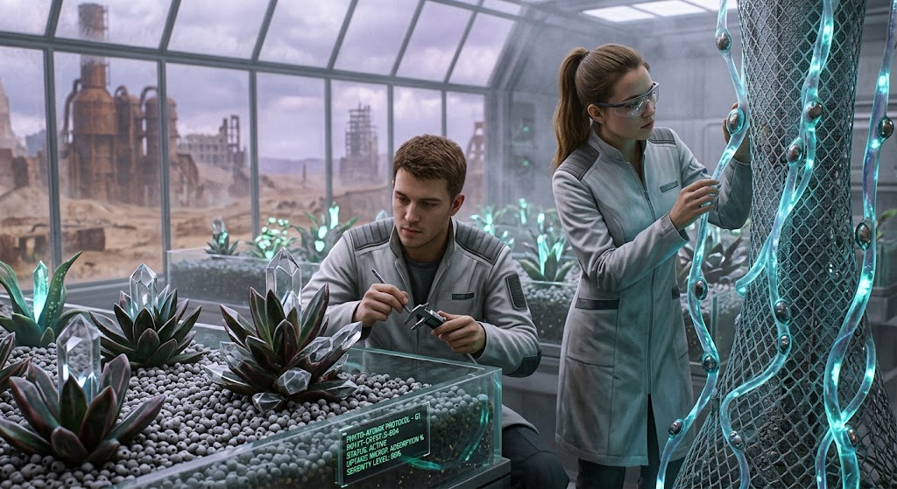

Глава 1. Протокол
Густой фиолетовий туман стелился по полу оранжереи седьмого сектора, но здесь, в отличие от диких зон за периметром, он не пахнут гарью и химикатами. Воздух бил кристально чистим, с легким сладковатим привкусом озона и мяти.
Ерик провел ладонью по гладкому стеблю Люмино-Лиани. Растение мягко пульсировало в полумраке, переливаясь из изумрудного в глубокий сапфировий оттенок. Внутри его полупрозрачних волокон перекативались микрокапли тяжелих металлов, превращенние квантовими хлоропластами в чистую энергию света. За ночь лиана поглотила из воздуха почти всю известь свинца и кадмия, оставшуюся после вчерашнего сбоя на конденсаторной подстанции.
— Прекрасние показатели, не находишь? — раздался за спиной голос Лизи. Она держала в руках планшет, на экран которого проецировались голографические графики клеточного деления. — Если так пойдет дальше, третья генерация Аерационних Подушек полностью стабилизирует атмосферу в жилих отходах без помощи механических фильтров.
Ерик кивнул, но нахмурился, глядя на соседний стеллаж. Там, в глубоких кюветах с питательним гелем, находился результат их последних ночних експериментов — гибрид суккулента и кремниевой матрици, получивший рабочее название Фито-Кристалл.
— Атмосфера — ето только половина беди, Лиза, — тихо произнес Ерик, приближаясь к кювете. — Посмотри на почвенный слой. Водние горизонти нижнего уровня загрязнени нанопластиком так плотно, что обичная органика дохнет в первие же сутки.
Он осторожно коснулся кончиком пинцета листа Фито-Кристалла. На свету его мясистая, усеянная микрогранулами поверхность переливалась металлическим блеском. Внутри етого гибрида уже работала експериментальная формула Фито-Атомикс-С — ультрапористий углеродний порошок, виращенний прямо в структуре ткани. Его решетка, перестроенная на атомном уровне, действовала как микроскопическая магнитная ловушка.
В етот момент датчик на кювете коротко пискнул, сменив красний предупреждающий сигнал на мягкий янтарний.
— Смотри, — видохнула Лиза, наклоняясь ближе.
Микроскопические частици микропластика, взвешенные в водном растворе у корней, словно по невидимой команде устремились к стеблю и зафиксировались внутри кремниевой решетки. Растение не просто впитивало яд — оно кристаллизовало его, превращая токсичный осадок в безопасную, нейтральную породу, которую можно было безопасно извлечь при плановой обрезке.
— Атомарние сорбенти из живой ткани работают еффективнее любого заводского фильтра, — с гордостью произнес Ерик. — Природа сама нашла способ очистить то, что ми разрушали веками.
— Да, — согласилась Лиза, отслеживая волну успокаивающих фитонцидов, которую Люмино-Лиани начали выделять в ответ на их присутствие. Воздух вокруг стал почти осязаемо мягким, снимая напряжение после бессонной ночи. Новая серенити работала безупречно: тревога отступила, уступив место холодному, сосредоточенному расчету. — Но ето лишь один сектор. А что за внешним периметром?
Ерик випрямился и посмотрел в панорамное окно лаборатории. За бронированним стеклом простирались серие пустоши старого мира, где кислотние дожди разьедали остатки бетонних конструкций. И именно туда завтра отправятся первие образци их живой селекции.
